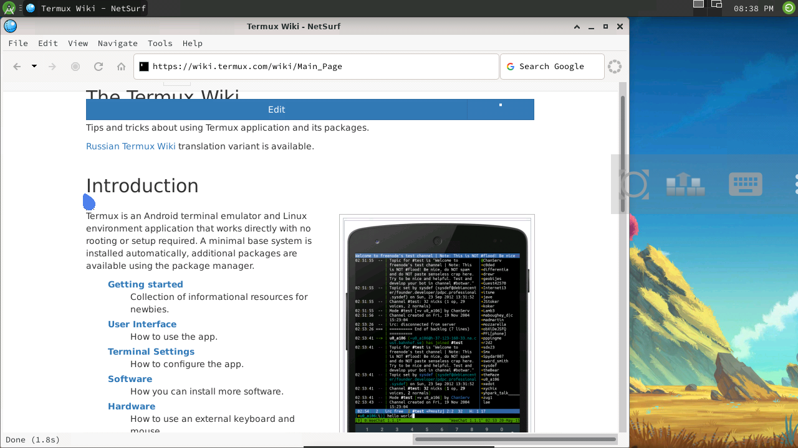
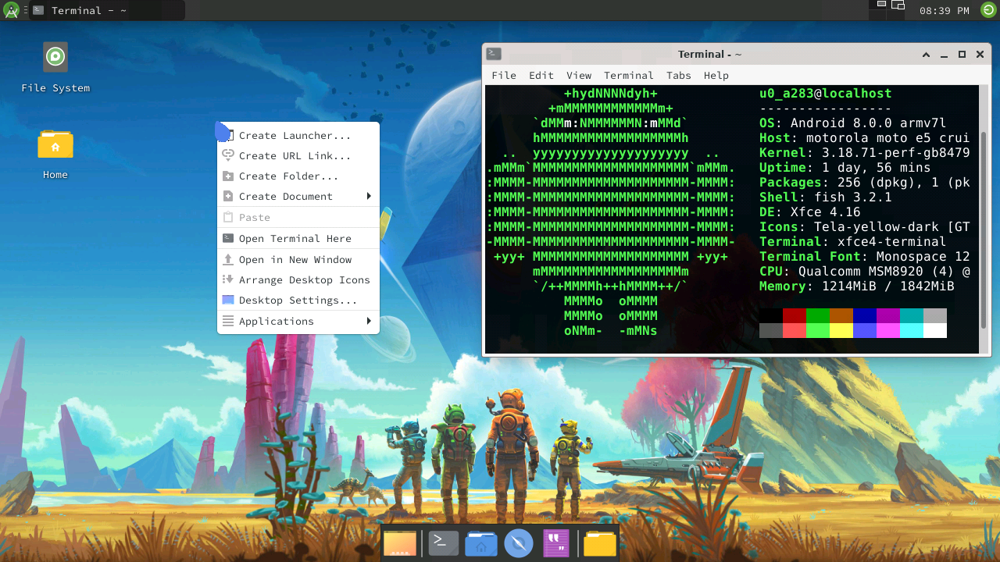
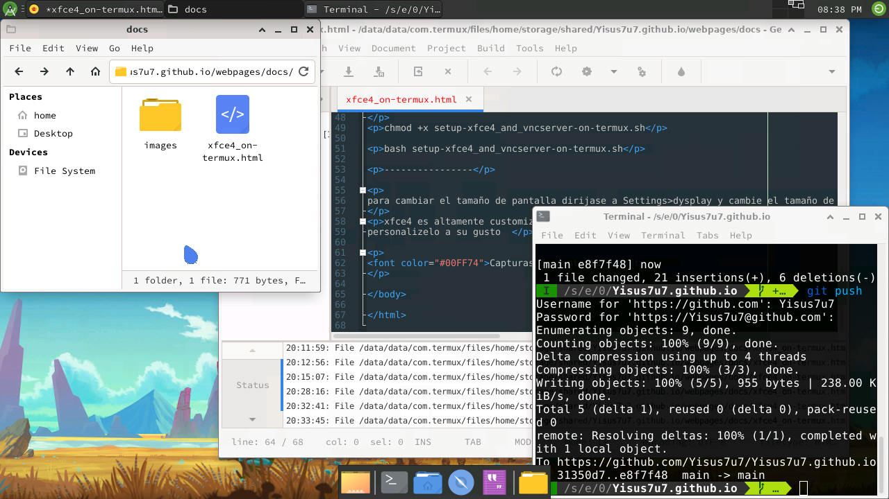

Termux hasta el momento a sido una exelente terminal, y te preguntaras, es posible instalar una interfaz grafica en el?
pues si, en este momento os explico como instalar xfce4 en termux facilmente
para hacer esto ingresa estos comandos:
----------------
pkg update && pkg upgrade
pkg install wget
cd $HOME
wget -L https://Yisus7u7.github.io/mirrors/scripts/setup-xfce4_and_vncserver-on-termux.sh
chmod +x setup-xfce4_and_vncserver-on-termux.sh
bash setup-xfce4_and_vncserver-on-termux.sh
----------------
para cambiar el tamaño de pantalla dirijase a Settings>dysplay y cambie el tamaño de su pantalla ahí
xfce4 es altamente customizable, descargue temas, fuentes y personalizelo a su gusto
Capturas de pantalla:



[neofetch, programando con geany, usando git y navegando en termux wiki]